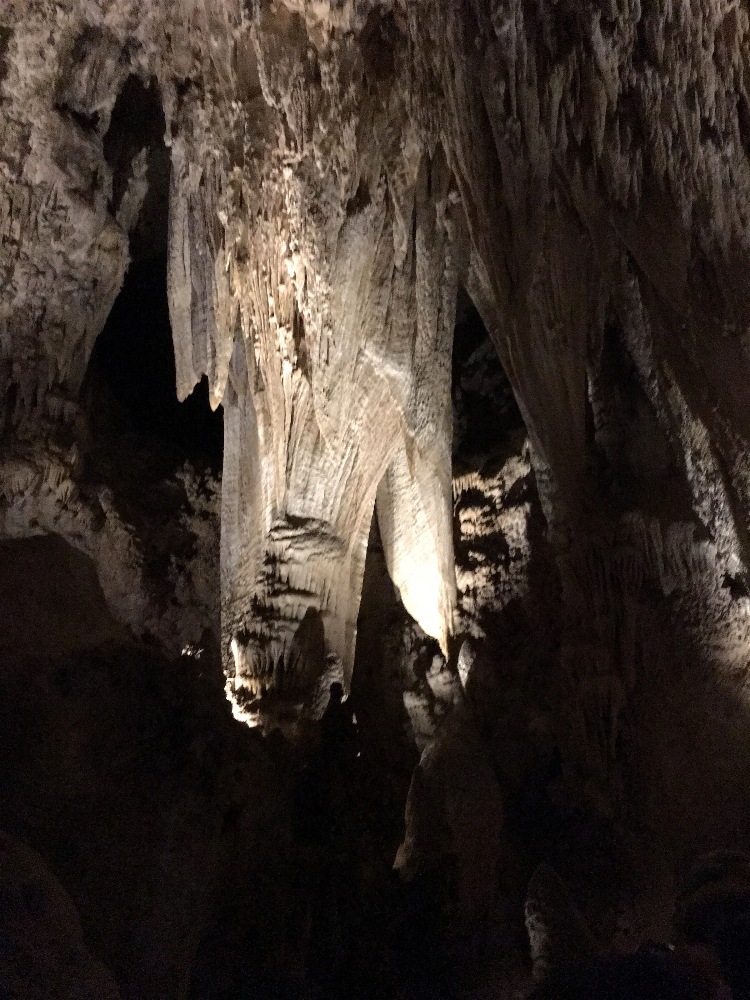

Saturday, Jun 9, 2018, 8:28 AM MDT
Carlsbad Caverns Visitor Center, Carlsbad, NM, United States
77°F Sunny
77°F Sunny
![]()
6/9 Whites City, NM -> Carlsbad Caverns NP, NM 8 mi, .25 hr
6/9 Carlsbad Caverns NP, NM -> El Paso, TX 145 mi, 3.25 hr
Trip Total: 2,019 mi
We had been to Carlsbad Caverns in 2005 with the boys, and did the Big Room self-guided tour (it is the largest single cave chamber in North America and could hold two US capitols), so this time we opted for the ranger-led, mile-long, 1.5 hr King’s Palace tour, which was really well done. This section of the cave is full of the usual stalactites and stalagmites, but also has dramatic drapery and popcorn formations. This time, we took the elevator up and down the 800-feet below the surface instead of walking!
We then headed to El Paso, TX for our overnight stay on the way to Tucson’s Saguaro National Park. US Route 180 took us through desert with no gas stations for 120 miles. We came across a huge white area, which was probably gypsum and/or salt.
